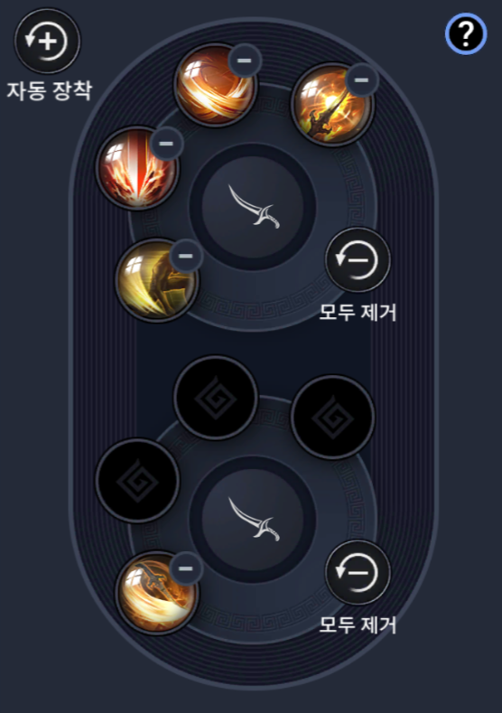
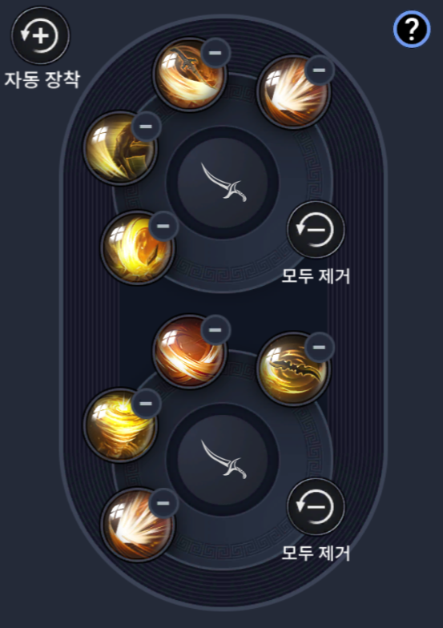

자동사냥
(기본)

토벌
(자동)

pvp
(필드)

pvp
(투기장)

| 스킬 | 거리 |
|---|---|
| 메마른 습격 | 10M 전진 11.9M |
| 열사 폭풍 1타 | 4M |
| 열사 폭풍 2타 | 6M 전진 10M |
| 사철 베기 | 5M |
| 신기루 | 30M 전진 |
| 아알의 숨결 | 14M |
| 사금 가르기 | 10M |
| 회피 | 9M |